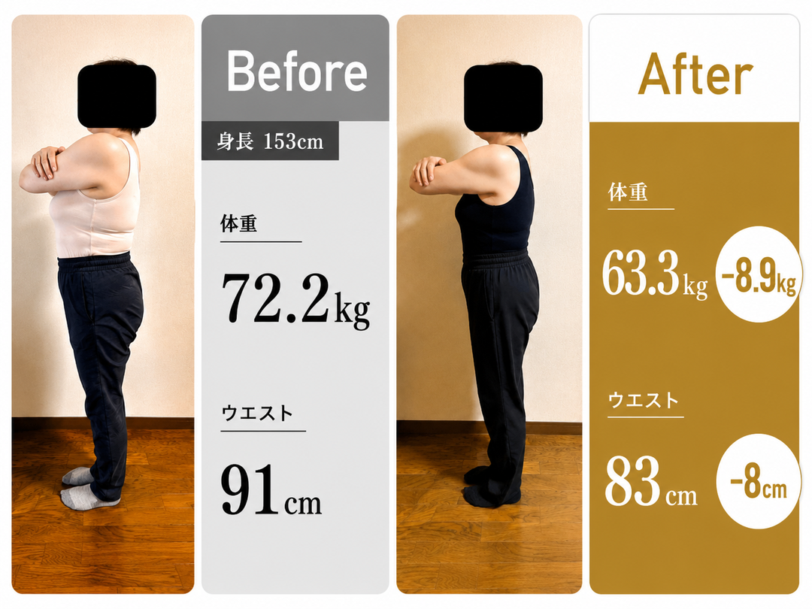
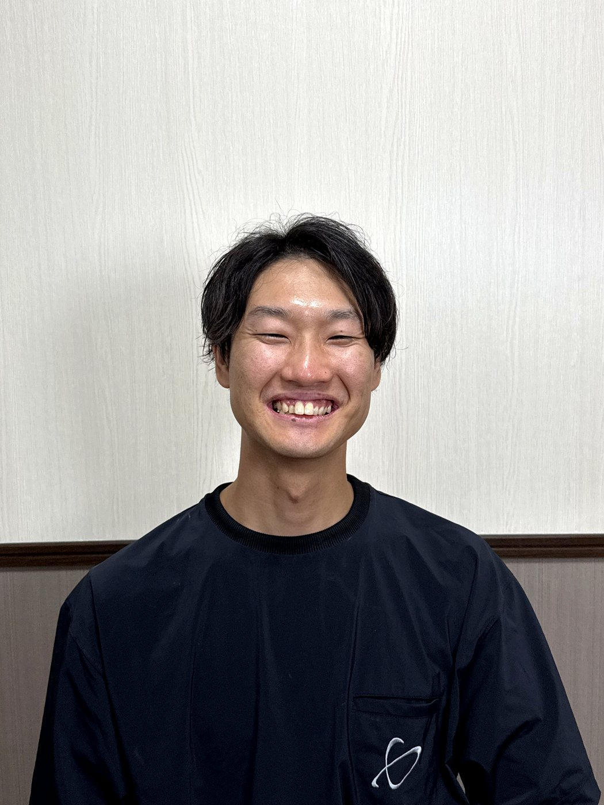
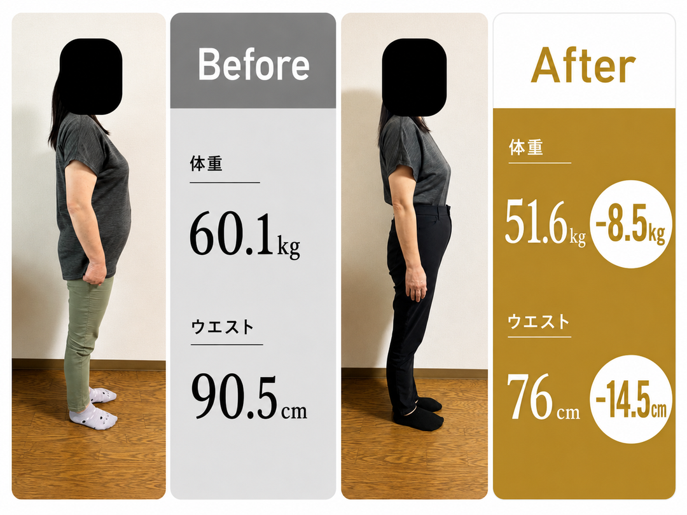
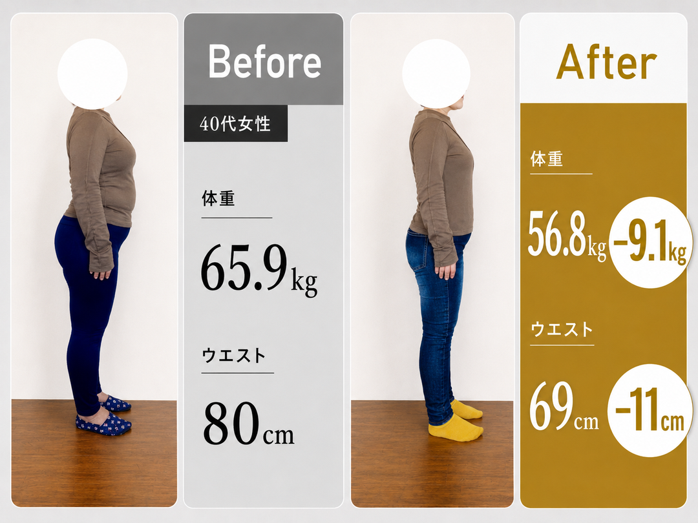
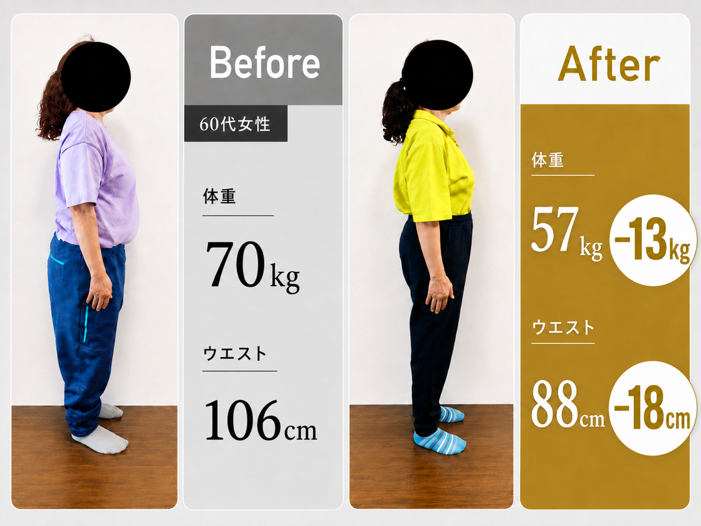
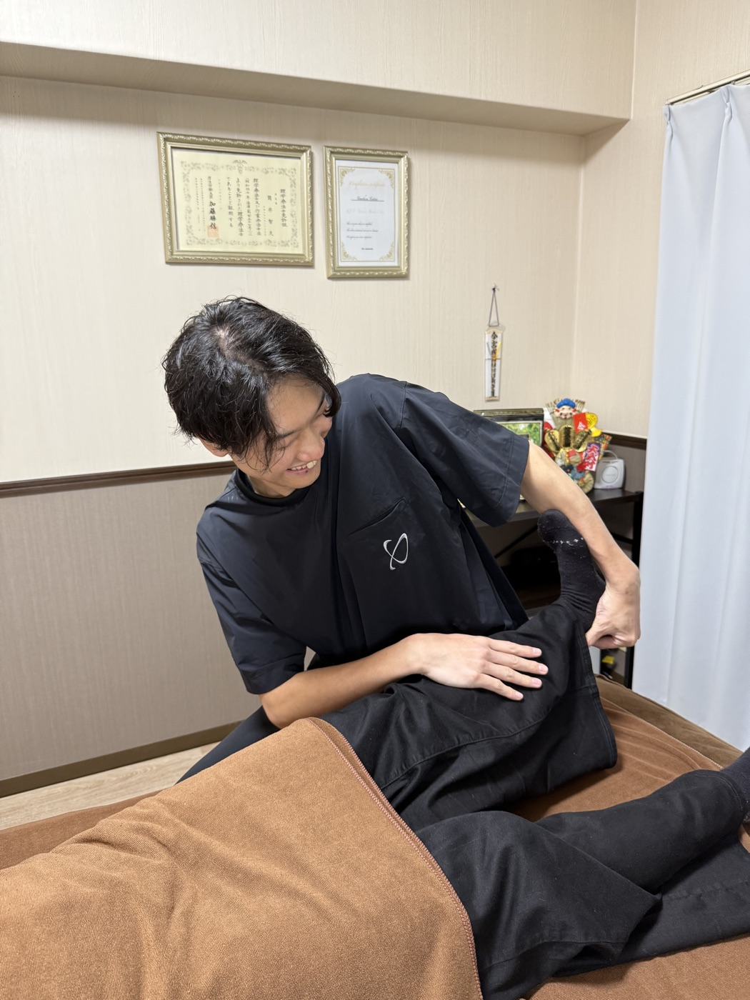

＼ まずは気軽にLINE登録OK ／

-8.9kg/ 3ヶ月
-8cm/ ウエスト
あなたも体験できる
1週間で1kg痩せる
ダイエット講座
食事制限だけに頼らず、整体院誠天の考え方をLINEで無料受講できます。
LINE登録で無料受講 ＞
★ 1,247名の女性が登録中
健康に痩せてリバウンドから遠のく、
ダイエット整体チームの人気プログラムの
「極意」をぎゅっと詰め込んだ無料LINE講座です。

食事制限だけに頼らず、整体院誠天の考え方をLINEで無料受講できます。
LINE登録で無料受講 ＞
40歳を過ぎると「あれ？寝ても疲れが取れない」
50歳が見えてきて、いよいよ更年期に突入。
気がつけば、数年で5kg、8kg、10kg増量。
今までだって、何もしなかったわけじゃない。
なんで痩せないの？
私の努力が足りないの？
……と、自分を責めていませんか？
違いますよ。あなたが悪いんじゃない。
あなたが痩せられなかった理由は
たった一つ。
「本当の痩せ方を知らないから」
だから、——
＼ 私にお任せください ／

3ヶ月平均8kg痩せる科学的に正しい方法で
リバウンドしないダイエットをお伝えします。
運動や食事制限などをしてもなかなか痩せなかった、
または何度もリバウンドを繰り返していませんか？
3ヶ月後にはストレスなく痩せて
その体をずっとキープできる状態にします。
年齢、性別、体形、関係ありません！
私におまかせ下さい。
人生最後のダイエットに致します。

食事制限だけに頼らず、整体院誠天の考え方をLINEで無料受講できます。
LINE登録で無料受講 ＞・・・・・ RESULTS ・・・・・
3ヶ月で-8.5kg
3ヶ月で-8.9kg

3ヶ月で-9.1kg

3ヶ月で-13kg
※実際の事例写真です。効果には個人差があります。
LINE登録後、毎日1通ずつ7日間にわたって配信。1通あたり約5分で読めるボリュームです。
40代からの正しい食べ方"3原則"とは？
年齢で代謝が落ちる仕組みと、それでも痩せる食事の組み立て方
朝1分でできる"代謝アップストレッチ"とは？
運動が苦手でもできる、寝起き30秒の習慣
更年期×食事の科学
ホルモン変化に負けない食事リズムと、避けるべき食材
むくみを取る"歩き方と呼吸法"
お風呂上がりに3分でできる、翌朝の顔と脚が変わる
食物繊維の"正しい摂り方"とは？
量より"組み合わせ"が9割。便秘も同時に解消
骨盤を整える"寝る前30秒"
理学療法士直伝・整体院の現場メソッドを自宅で
リバウンドしない"続け方"とは？
卒業後の体重を3年キープする習慣"3つ"
＋α 特典
LINE登録者限定で
『40〜50代女性のための1週間献立例』PDFを
無料プレゼント中。
食事制限だけに頼らず、整体院誠天の考え方をLINEで無料受講できます。
LINE登録で無料受講 ＞
ダイエットプログラムを行っている理由は、
整体の施術だけでは限界があったからです。
「根本から症状を改善する」を
コンセプトに東加古川院を開業し、
姿勢や慢性痛を改善してきました。
しかし、お客様からは体重増加やリバウンド、
体重増加で膝や腰の負担、
健康診断の結果を気にする声が多く寄せられました。
外からの施術だけでは
これらの悩みを解決するのが難しいと感じ、
栄養面や生活習慣といった
内側からのアプローチも必要だと考えました。
そこでたくさんの勉強会に行ったり調べたりし、
試行錯誤しながらダイエットプログラムを開発しました。
モニター試験を行ったところ、
3ヶ月で平均8kgの減量に成功しました。
科学的に正しい方法で行うことによって
継続的に健康的な体を手に入れることが
可能なプログラムであると確信し、
もっと広めていきたいと思いました。
このプログラムではストレスなく継続でき、
終了後もリバウンドしにくい体質を作ることができます。
年齢も性別も関係ありません。
過度な運動や食事制限もなしで
一時的な減量ではなく、根本から体を変え、
健康を維持できる体を提供していきたいと思っています。
はい、LINE講座は完全無料です。途中の押し売りや課金もございません。
ありません。配信は1日1〜2通の知識のお届けが中心です。整体院の予約案内は希望時のみお送りします。
はい、LINEの通常のブロックでいつでも解除できます。理由を聞かれることもありません。
もちろんです。LINE講座は全国どこからでも受講可能。文字と動画でお届けします。
食事制限だけに頼らず、整体院誠天の考え方をLINEで無料受講できます。
LINE登録で無料講座を受け取る ＞